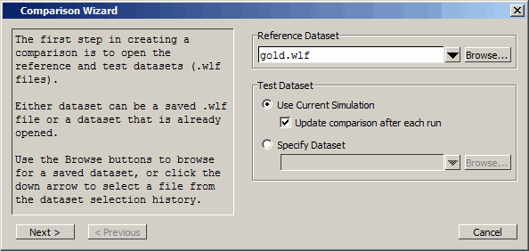

Comparing the Simulation Runs
Questa SIM includes a Comparison Wizard
that walks you through the process. You can also configure the comparison
manually with menu or command line commands.
Procedure
Create
a comparison using the Comparison Wizard.
- Select .
- Click
the Browse button
and select gold.wlf as
the reference dataset (Figure 1). Recall that gold.wlf is from
the first simulation run.Figure 1. First Dialog Box of the Waveform Comparison Wizard
- Leaving the test dataset set to Use Current Simulation, click Next.
- Select Compare All Signals in
the second dialog box (Figure 2) and click Next.Figure 2. Second Dialog Box of the Waveform Comparison Wizard

- In the
next three dialog boxes, click Next, Compute Differences Now,
and Finish,
respectively.
Questa SIM performs the comparison and displays the compared signals in the Wave window.